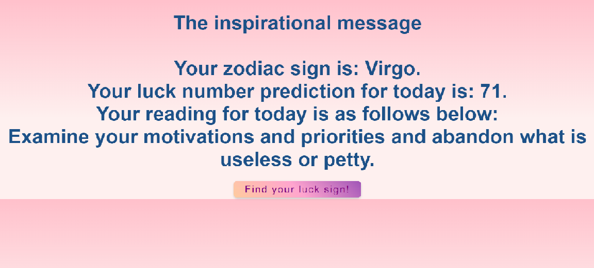
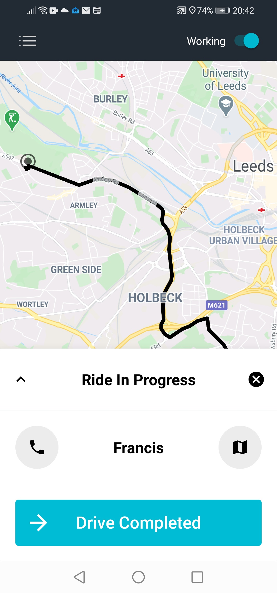

About Me
Hi! I'm Francis, a creative, cross-functional, tech-savvy and Full Stack Web Developer with 10+ years of professional experience in producing software. A self-motivated, committed and hardworking individual who has a thorough understanding of software administration rules and regulations.
I am performance-driven and motivated Full Stack Web Developer with a vast array of knowledge in many different front-end and backend languages, responsive frameworks, databases and best code practices.
In my free time I like to read about scientific software developments, and as well as always look at creating new projects, expanding my knowledge on new and upcoming technics.
Fun fact! I've been on site programing for 0 seconds!
Projects
The Astrology Generator

Find out your rising sign randomly, and generate, zodiac sign.
The Taxi Application

Request a taxi ride to travel in your town or city by using this app.
The Car Sharing Website
Request a Car-sharing ride to travel in your town or city by using this website.
Skills
Contact
Have an interesting project? I would like to hear about your project!
Please, contact us by using the link below: